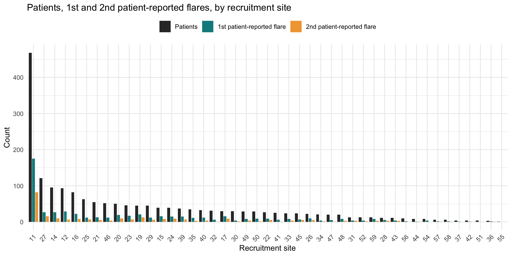
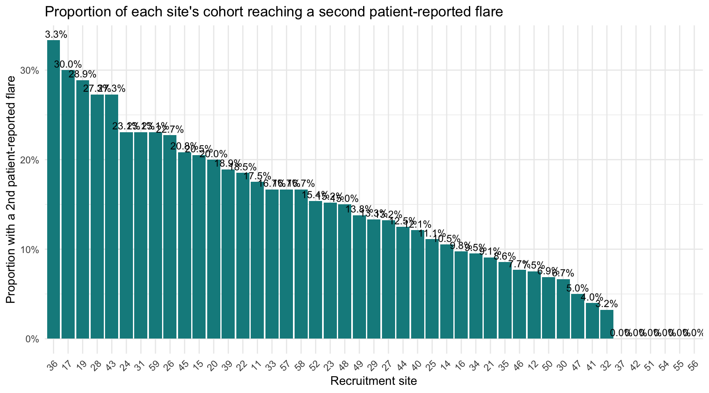
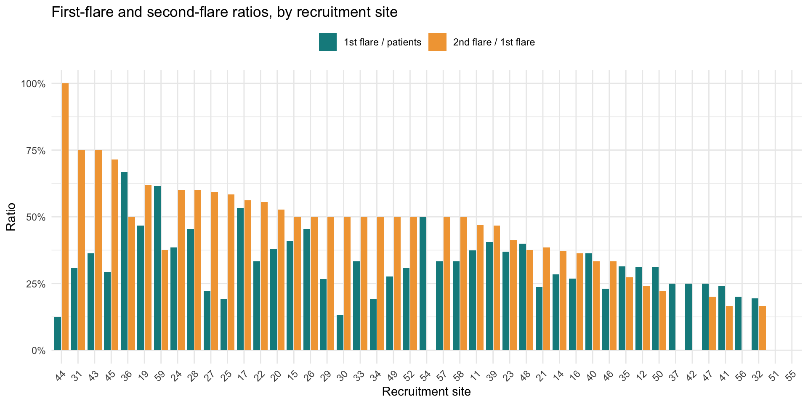

Code
source("poisson_helpers.R") # -> population_cohort, covariates, demo_tbl,
# and build_event_counts.R's episode-date objectsFor each recruitment site (SiteNo): the number of patients, the number who reached a first patient-reported (soft) flare, and the number who reached a second one - all within the standard 730.5-day (2-year) follow-up window used throughout this repository. Patient-reported flares only (no objective/hard flares here). Soft-flare episode dates combine the portal, Qflare, and hard-flare-imputed routes (see build_event_counts.R).
source("poisson_helpers.R") # -> population_cohort, covariates, demo_tbl,
# and build_event_counts.R's episode-date objectssoft_episode_dates <- dplyr::bind_rows(
episodes_soft_portal %>% dplyr::select(ParticipantNo, episode_date),
qflare_episodes,
imputed_soft %>% dplyr::transmute(ParticipantNo, episode_date = flare_start_date)
)
entry_dates <- demo_tbl %>% dplyr::select(ParticipantNo, entry_date)Ranks each participant’s soft-flare episodes chronologically; the 1st/2nd one counts only if it lands within the 730.5-day cutoff (matching how “did they reach the Nth flare” is defined in Time to Nth Flare KM plots.qmd).
cutoff_days <- 730.5
ranked_soft_flares <- soft_episode_dates %>%
dplyr::semi_join(population_cohort, by = "ParticipantNo") %>%
dplyr::group_by(ParticipantNo) %>%
dplyr::arrange(episode_date, .by_group = TRUE) %>%
dplyr::mutate(flare_rank = dplyr::row_number()) %>%
dplyr::ungroup() %>%
dplyr::filter(flare_rank <= 2) %>%
dplyr::left_join(entry_dates, by = "ParticipantNo") %>%
dplyr::mutate(days_from_entry = as.numeric(as.Date(episode_date) - as.Date(entry_date))) %>%
dplyr::filter(days_from_entry >= 0, days_from_entry <= cutoff_days)
first_flare_status <- ranked_soft_flares %>% dplyr::filter(flare_rank == 1)
second_flare_status <- ranked_soft_flares %>% dplyr::filter(flare_rank == 2)
flares_by_site <- population_cohort %>%
dplyr::select(ParticipantNo) %>%
dplyr::left_join(covariates %>% dplyr::select(ParticipantNo, SiteNo), by = "ParticipantNo") %>%
dplyr::mutate(
had_first_flare = ParticipantNo %in% first_flare_status$ParticipantNo,
had_second_flare = ParticipantNo %in% second_flare_status$ParticipantNo
) %>%
dplyr::filter(!is.na(SiteNo))
site_summary <- flares_by_site %>%
dplyr::group_by(SiteNo) %>%
dplyr::summarise(
n_cohort = dplyr::n(),
n_first_flare = sum(had_first_flare),
n_second_flare = sum(had_second_flare),
proportion = n_second_flare / n_cohort,
# ratio_first_of_cohort: of all patients at this site, what fraction
# reached a first flare. ratio_second_of_first: of patients at this
# site who reached a first flare, what fraction went on to a second -
# NA (not 0) when nobody at the site reached a first flare, since the
# ratio is undefined there rather than genuinely zero.
ratio_first_of_cohort = n_first_flare / n_cohort,
ratio_second_of_first = dplyr::if_else(n_first_flare > 0, n_second_flare / n_first_flare, NA_real_),
.groups = "drop"
)site_summary %>%
tidyr::pivot_longer(
cols = c(n_cohort, n_first_flare, n_second_flare),
names_to = "category", values_to = "count"
) %>%
dplyr::mutate(
category = factor(
category,
levels = c("n_cohort", "n_first_flare", "n_second_flare"),
labels = c("Patients", "1st patient-reported flare", "2nd patient-reported flare")
)
) %>%
ggplot2::ggplot(ggplot2::aes(x = forcats::fct_reorder(SiteNo, count, .fun = max, .desc = TRUE), y = count, fill = category)) +
ggplot2::geom_col(position = ggplot2::position_dodge2(preserve = "single")) +
ggplot2::scale_fill_manual(values = c("#333333", "#0F8B8D", "#F2A541"), name = NULL) +
ggplot2::labs(
title = "Patients, 1st and 2nd patient-reported flares, by recruitment site",
x = "Recruitment site", y = "Count"
) +
ggplot2::theme_minimal() +
ggplot2::theme(axis.text.x = ggplot2::element_text(angle = 45, hjust = 1), legend.position = "top")
Raw counts alone can just reflect site size - this shows what fraction of each site’s own cohort reached a second flare.
site_summary %>%
ggplot2::ggplot(ggplot2::aes(x = forcats::fct_reorder(SiteNo, proportion, .desc = TRUE), y = proportion)) +
ggplot2::geom_col(fill = "#0F8B8D") +
ggplot2::geom_text(ggplot2::aes(label = scales::percent(proportion, accuracy = 0.1)), vjust = -0.4, size = 3.2) +
ggplot2::scale_y_continuous(labels = scales::percent) +
ggplot2::labs(
title = "Proportion of each site's cohort reaching a second patient-reported flare",
x = "Recruitment site", y = "Proportion with a 2nd patient-reported flare"
) +
ggplot2::theme_minimal() +
ggplot2::theme(axis.text.x = ggplot2::element_text(angle = 45, hjust = 1))
Two different denominators, shown side by side: 1st flare / patients (of everyone at this site, what fraction ever reached a first patient-reported flare) versus 2nd flare / 1st flare (of those who did, what fraction went on to a second one - i.e. progression risk, conditional on already having flared once).
site_summary %>%
tidyr::pivot_longer(
cols = c(ratio_first_of_cohort, ratio_second_of_first),
names_to = "ratio_type", values_to = "ratio"
) %>%
dplyr::mutate(
ratio_type = factor(
ratio_type,
levels = c("ratio_first_of_cohort", "ratio_second_of_first"),
labels = c("1st flare / patients", "2nd flare / 1st flare")
)
) %>%
ggplot2::ggplot(ggplot2::aes(x = forcats::fct_reorder(SiteNo, ratio, .fun = max, .desc = TRUE), y = ratio, fill = ratio_type)) +
ggplot2::geom_col(position = ggplot2::position_dodge2(preserve = "single")) +
ggplot2::scale_y_continuous(labels = scales::percent) +
ggplot2::scale_fill_manual(values = c("#0F8B8D", "#F2A541"), name = NULL) +
ggplot2::labs(
title = "First-flare and second-flare ratios, by recruitment site",
x = "Recruitment site", y = "Ratio"
) +
ggplot2::theme_minimal() +
ggplot2::theme(axis.text.x = ggplot2::element_text(angle = 45, hjust = 1), legend.position = "top")Warning: `fct_reorder()` removing 2 missing values.
ℹ Use `.na_rm = TRUE` to silence this message.
ℹ Use `.na_rm = FALSE` to preserve NAs.Warning: Removed 2 rows containing missing values or values outside the scale range
(`geom_col()`).
site_summary %>%
dplyr::arrange(dplyr::desc(n_second_flare)) %>%
dplyr::transmute(
Site = SiteNo,
`N (cohort)` = n_cohort,
`N (1st flare)` = n_first_flare,
`N (2nd flare)` = n_second_flare,
`1st flare / patients` = scales::percent(ratio_first_of_cohort, accuracy = 0.1),
`2nd flare / 1st flare` = ifelse(is.na(ratio_second_of_first), "-", scales::percent(ratio_second_of_first, accuracy = 0.1))
) %>%
knitr::kable()| Site | N (cohort) | N (1st flare) | N (2nd flare) | 1st flare / patients | 2nd flare / 1st flare |
|---|---|---|---|---|---|
| 11 | 468 | 175 | 82 | 37.4% | 46.9% |
| 27 | 121 | 27 | 16 | 22.3% | 59.3% |
| 19 | 45 | 21 | 13 | 46.7% | 61.9% |
| 14 | 95 | 27 | 10 | 28.4% | 37.0% |
| 20 | 50 | 19 | 10 | 38.0% | 52.6% |
| 17 | 30 | 16 | 9 | 53.3% | 56.2% |
| 24 | 39 | 15 | 9 | 38.5% | 60.0% |
| 15 | 39 | 16 | 8 | 41.0% | 50.0% |
| 16 | 82 | 22 | 8 | 26.8% | 36.4% |
| 12 | 93 | 29 | 7 | 31.2% | 24.1% |
| 23 | 46 | 17 | 7 | 37.0% | 41.2% |
| 25 | 63 | 12 | 7 | 19.0% | 58.3% |
| 39 | 37 | 15 | 7 | 40.5% | 46.7% |
| 29 | 45 | 12 | 6 | 26.7% | 50.0% |
| 21 | 55 | 13 | 5 | 23.6% | 38.5% |
| 22 | 27 | 9 | 5 | 33.3% | 55.6% |
| 26 | 22 | 10 | 5 | 45.5% | 50.0% |
| 45 | 24 | 7 | 5 | 29.2% | 71.4% |
| 33 | 24 | 8 | 4 | 33.3% | 50.0% |
| 40 | 33 | 12 | 4 | 36.4% | 33.3% |
| 46 | 52 | 12 | 4 | 23.1% | 33.3% |
| 49 | 29 | 8 | 4 | 27.6% | 50.0% |
| 28 | 11 | 5 | 3 | 45.5% | 60.0% |
| 31 | 13 | 4 | 3 | 30.8% | 75.0% |
| 35 | 35 | 11 | 3 | 31.4% | 27.3% |
| 43 | 11 | 4 | 3 | 36.4% | 75.0% |
| 48 | 20 | 8 | 3 | 40.0% | 37.5% |
| 59 | 13 | 8 | 3 | 61.5% | 37.5% |
| 30 | 30 | 4 | 2 | 13.3% | 50.0% |
| 34 | 21 | 4 | 2 | 19.0% | 50.0% |
| 50 | 29 | 9 | 2 | 31.0% | 22.2% |
| 52 | 13 | 4 | 2 | 30.8% | 50.0% |
| 32 | 31 | 6 | 1 | 19.4% | 16.7% |
| 36 | 3 | 2 | 1 | 66.7% | 50.0% |
| 41 | 25 | 6 | 1 | 24.0% | 16.7% |
| 44 | 8 | 1 | 1 | 12.5% | 100.0% |
| 47 | 20 | 5 | 1 | 25.0% | 20.0% |
| 57 | 6 | 2 | 1 | 33.3% | 50.0% |
| 58 | 6 | 2 | 1 | 33.3% | 50.0% |
| 37 | 4 | 1 | 0 | 25.0% | 0.0% |
| 42 | 4 | 1 | 0 | 25.0% | 0.0% |
| 51 | 4 | 0 | 0 | 0.0% | - |
| 54 | 8 | 4 | 0 | 50.0% | 0.0% |
| 55 | 1 | 0 | 0 | 0.0% | - |
| 56 | 10 | 2 | 0 | 20.0% | 0.0% |
R version 4.6.0 (2026-04-24)
Platform: aarch64-apple-darwin24.6.0
locale: en_GB.UTF-8||en_GB.UTF-8||en_GB.UTF-8||C||en_GB.UTF-8||en_GB.UTF-8
attached base packages: stats, graphics, grDevices, utils, datasets, methods and base
other attached packages: openxlsx(v.4.2.8.1), readxl(v.1.5.0), magrittr(v.2.0.5), lubridate(v.1.9.5), forcats(v.1.0.1), stringr(v.1.6.0), dplyr(v.1.2.1), purrr(v.1.2.2), readr(v.2.2.0), tidyr(v.1.3.2), tibble(v.3.3.1), ggplot2(v.4.0.3), tidyverse(v.2.0.0) and patchwork(v.1.3.2)
loaded via a namespace (and not attached): generics(v.0.1.4), stringi(v.1.8.7), lattice(v.0.22-9), lme4(v.2.0-1), hms(v.1.1.4), digest(v.0.6.39), evaluate(v.1.0.5), grid(v.4.6.0), timechange(v.0.4.0), RColorBrewer(v.1.1-3), fastmap(v.1.2.0), Matrix(v.1.7-5), cellranger(v.1.1.0), jsonlite(v.2.0.0), zip(v.3.0.0), pander(v.0.6.6), scales(v.1.4.0), codetools(v.0.2-20), reformulas(v.0.4.4), Rdpack(v.2.6.6), cli(v.3.6.6), rlang(v.1.2.0), rbibutils(v.2.4.1), splines(v.4.6.0), withr(v.3.0.2), yaml(v.2.3.12), otel(v.0.2.0), tools(v.4.6.0), tzdb(v.0.5.0), nloptr(v.2.2.1), minqa(v.1.2.8), boot(v.1.3-32), vctrs(v.0.7.3), R6(v.2.6.1), lifecycle(v.1.0.5), htmlwidgets(v.1.6.4), MASS(v.7.3-65), pkgconfig(v.2.0.3), pillar(v.1.11.1), gtable(v.0.3.6), glue(v.1.8.1), Rcpp(v.1.1.1-1.1), xfun(v.0.58), tidyselect(v.1.2.1), knitr(v.1.51), farver(v.2.1.2), nlme(v.3.1-169), htmltools(v.0.5.9), labeling(v.0.4.3), rmarkdown(v.2.31), compiler(v.4.6.0) and S7(v.0.2.2)